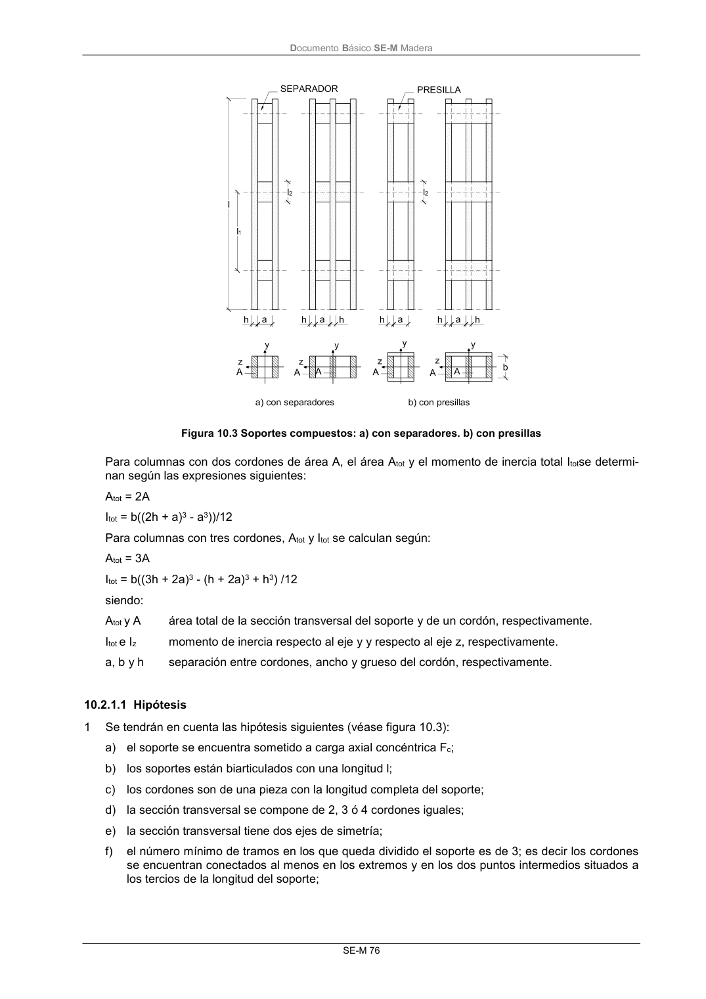

DB-SE-M · 10.2.1.1 Hipótesis · versión 2019-12-20 · capa oficial
Formatos: JSON compacto · Markdown · PDF fuente
Ámbito del documento · texto del ámbito · documento y tablas
ID técnico a0142 · PDF pág. 82-83 · jerarquía no validada por persona · contrastado con el literal de la página 82 (candidato tipográfico); no validado por persona · padre: a0141
10.2.1.1 Hipótesis 1 Se tendrán en cuenta las hipótesis siguientes (véase figura 10.3): a) el soporte se encuentra sometido a carga axial concéntrica Fc; b) los soportes están biarticulados con una longitud l; c) los cordones son de una pieza con la longitud completa del soporte; d) la sección transversal se compone de 2, 3 ó 4 cordones iguales; e) la sección transversal tiene dos ejes de simetría; f) el número mínimo de tramos en los que queda dividido el soporte es de 3; es decir los cordones se encuentran conectados al menos en los extremos y en los dos puntos intermedios situados a los tercios de la longitud del soporte; DocumentoBásico SE-M Madera SE-M 77 g) la distancia libre entre cordones, a, no es superior a 3 veces el espesor del cordón, h, en sopor- tes con separadores y no superior a 6 veces el espesor del cordón en soportes con presillas; h) los esfuerzos de los separadores y presillas se calculan de acuerdo con el apartado 10.2.1.3; i) la dimensión del separador, l2, cumple la condición siguiente: l2 /a 1,5; j) la dimensión de la presilla, l2, cumple la condición siguiente: l2 /a 2; k) existen como mínimo 4 clavos o 2 pernos con conectores en cada plano de cortante. En uniones clavadas existen al menos 4 clavos situados en una fila en cada extremo, en la dirección longitu- dinal del soporte.

PDF fuente redistribuible: copia fiel enlazada en esta página (SHA256 verificado).